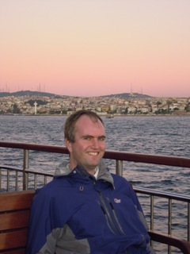
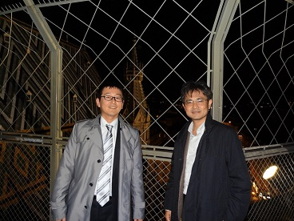
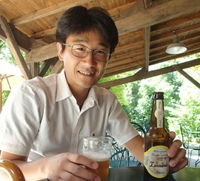
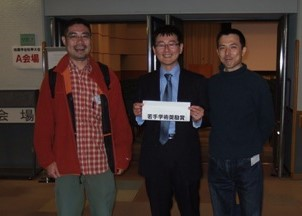
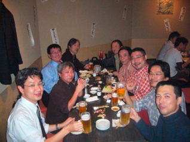
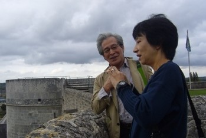
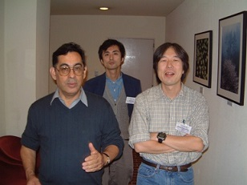
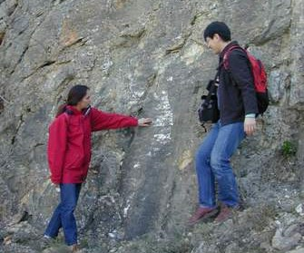
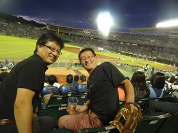
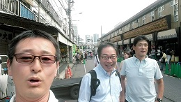

Collaborations
Students and Postdocs
- Sabrine Ben Rhouma (master student, IPGP, 2019): Induced seismicity.
- Claudio Trovato (PhD student, U. Orléans, 2012 - 2015): Volcano-seismology (FP7-NEMOH project).
- Julie Maury (postdoc, project ANR S4, 2013 - 2014 --> postdoc at Univ. Tokyo): Slow slip analysis in Mexico.
- Geoffrey Cournier (master student, U. Strasbourg, 2012): Analysis of the 2011 Tohoku earthquake.
- Marine Renault (master student, U. Strasbourg, 2011): Probabilistic seismic hazard in Marmara region.
- Masoud Fallah (master student, U. Aix-Marseille II, 2010): Simulation of seismicity due to fluid circulation.
- Virginie Durand (master student, U. Strasbourg, 2009 --> PhD student at Univ. Joseph Fourier): Stroung ground motion simulation for the 1999 Izmit earthquake.
- Jerome Salichon (postdoc, project SEISMULATORS, 2007-2008 --> postdoc at Univ Sophia Antipolis): Finite source inversion.
- Jessica Le-Puth (master student, U. Joseph Fourier, 2006): Ground motion simulation around Nice.
"Young" Collaborators
-
(for whom I participate in their master/PhD thesis or in their early carriers within the institution, with at least one publication written by them)
- Roby Drouilly (PhD student at Univ. Purdu, 2016.): Dynamic rupture simulations for the 2010 Haiti earthquake.
- Thomas Ulrich (BRGM, until 2015 --> PhD student at LMU München): Ground motion simulations and non-linear source inversions.
- Ariane Ducellier (BRGM, until 2015 --> PhD student at Princeton University): Development of finite difference method in complex medium.
- Walter Imperatori (master student at Univ. Trieste, 2008 --> PhD at ETHZ): Ground motion simulation in the Friuli region.
- Victor Cruz-Atienza (PhD student at Géoscience Azur, 2007, actually associate professor at UNAM): Verification in dynamic rupture simulations.
Some "Senior" Collaborators
-
(those whom we wrote with at least one paper)
- John Douglas (7), was senior researcher at BRGM and is now at Strathclyde University, UK. He is indeed YOUNGER than me.
- Satoshi Ide (6), Professor at Graduate School of Sciece, the University of Tokyo. We know each other since the graduate school.
- Masa(yuki) Yoshimi (2), Researcher at National Institute of Advanced Industrial Science and Technology (AIST) - Geological Survey of Japan.
- Nobuki Kame (book), Associate Professor at Earthquake Research Institute, the University of Tokyo.
- Koji Uenishi (book), Associate Professor at Department of Aeronautics and Astronautics, the University of Tokyo.
   
My directors
- Prof. Haruo Sato (Tohoku Univ., retired): My undergraduate advisor. Fractal analysis on the seismicity.
- Prof. Mitsuhiro Matsu'ura (Univ. Tokyo, retired): My PhD advisor. Friction law, nucleation, dynamic rupture propagation.
- Dr. Eiichi Fukuyama (NIED): My PhD advisor. Dynamic rupture propagation.
- Prof. Raul Madariaga (ENS Paris, retired): My postdoc tutor. Dynamic rupture propagation and ground motion.
- Dr. Catherine Berge-Thierry (IRSN, currently CEA): My postdoc tutor. Earthque scenario inferred from dynamic rupture modeling.
   
Just "Friends" !?
-


News
References
Links